Terminologi
Konfigurasi
Service Type
Service Type adalah fitur yang digunakan untuk konfigurasi tipe service.
- Penjelasan Service Type
- Membuat Service Type
- Memodifikasi Service Type
- Menghapus Service Type
- Menonaktifkan Service Type
Penjelasan Service Type
Informasi pada Service Type dibagi menjadi beberapa bagian, yaitu:
- Header
- Tab Fix Items Configuration
- Tab Team
- Tab Analytic & Project
- Tab Workflow Policy
- Tab Service Quotation Configuration
- Tab Note
- Tab Operating Unit
HEADER

Type
Tipe Service.
Code
Kode Service.
Active
Penanda status Service aktif.
Contract Sequence
Sequence yang digunakan.
Custom Info Template
Template yang digunakan.
TAB FIX ITEMS CONFIGURATION

Receivable Journal
Receivable Journal yang digunakan.
Receivable Account
Receivable Account yang digunakan.
Allowed Product
Tabel allowed product akan berisi produk yang diperbolehkan untuk digunakan.
Allowed Product Categories
Tabel allowed product categories akan berisi kategori produk yang diperbolehkan untuk digunakan.
TAB TEAM

Allowed Product
Tabel allowed product akan berisi produk yang diperbolehkan untuk digunakan.
Allowed Product Categories
Tabel allowed product categories akan berisi kategori produk yang diperbolehkan untuk digunakan.
TAB ANALYTIC & PROJECT

Parent Analytic Account
Parent Analytic Account yang digunakan.
Auto Create Project
Penanda project dibuat secara otomatis.
TAB WORKFLOW POLICY
Allow To Confirm Contract
Kebijakan untuk mengkonfirmasi kontrak.
Allow To Restart Approval Contract
Kebijakan untuk merestart persetujuan kontrak.
Allow To Force Start Contract
Kebijakan untuk memaksa memulai kontrak.
Allow To Force Finish Contract
Kebijakan untuk memaksa menyelesaikan kontrak.
Allow To Terminate Contract
Kebijakan untuk memaksa mengakhiri kontrak.
Allow To Cancel Contract
Kebijakan untuk membatalkan kontrak.
Allow To Restart Contract
Kebijakan untuk merestart kontrak.
TAB SERVICE QUOTATION CONFIGURATION

Quotation Sequence
Quotation Sequence yang digunakan.
Quotation Custom Info Template
Quotation Custom Info Template yang digunakan.
Allow To Confirm Service Quotation
Kebijakan untuk mengkonfirmasi service quotation.
Allow To Restart Approval Service Quotation
Kebijakan untuk merestart persetujuan service quotation.
Allow To Mark As Won Service Quotation
Kebijakan untuk menandakan service quotation telah menang.
Allow To Mark As Lost Service Quotation
Kebijakan untuk menandakan service quotation telah kalah.
Allow To Cancel Service Quotation
Kebijakan untuk membatalkan service quotation.
Allow To Restart Service Quotation
Kebijakan untuk merestart Service Quotation.
Required Start Date
Penanda diperlukan tanggal mulai.
Required End Date
Penanda diperlukan tanggal selesai.
TAB NOTE

Note
Catatan tambahan.
TAB OPERATING UNIT

Operating Unit
Nama operating unit.
Contract Sequence
Contract Sequence yang digunakan.
Quotation Sequence
Quotation Sequence yang digunakan.
Fix Item Receivable Journal
Fix Item Receivable Journal yang digunakan.
Fix Item Receivable Account
Fix Item Receivable Account yang digunakan.
Membuat Service Type
A. INPUT
(Tidak ada instruksi khusus)
B. LANGKAH KERJA
- Buka menu Service -> Configuration -> Service Type. Abaikan jika sudah berada pada menu yang dimaksud.
- Klik tombol Create pada bagian atas-kiri form.

- Isi Type. Wajib diisi.
- Isi Code. Wajib diisi.
- Aktifkan/ Deaktifkan Active. Tidak wajib diisi.
- Pilih Contract Sequence. Tidak wajib diisi.
- Pilih Custom Info Template. Tidak wajib diisi.
- Beralih ke tab Fix Items Configuration.
- Pilih Receivable Journal. Tidak wajib diisi.
- Pilih Receivable Account. Tidak wajib diisi.
- Tambah/Hapus Allowed Products. Ulangi langkah ini sampai Allowed Products sesuai dengan keinginan.
- Tambah/Hapus Allowed Product Categories. Ulangi langkah ini sampai Allowed Product Categories sesuai dengan keinginan.
- Beralih ke tab Team.
- Tambah/Hapus Allowed Products. Ulangi langkah ini sampai Allowed Products sesuai dengan keinginan.
- Tambah/Hapus Allowed Product Categories. Ulangi langkah ini sampai Allowed Product Categories sesuai dengan keinginan.
- Beralih ke tab Analytic & Project.
- Pilih Parent Analytic Account. Tidak wajib diisi.
- Aktifkan/ Deaktifkan Auto Create Project. Tidak wajib diisi.
- Beralih ke tab Workflow Policy.
- Pilih Allow To Confirm Contract. Tidak wajib diisi.
- Pilih Allow To Restart Approval Contract. Tidak wajib diisi.
- Pilih Allow To Force Start Contract. Tidak wajib diisi.
- Pilih Allow To Force Finish Contract. Tidak wajib diisi.
- Pilih Allow To Terminate Contract. Tidak wajib diisi.
- Pilih Allow To Cancel Contract. Tidak wajib diisi.
- Pilih Allow To Restart Contract. Tidak wajib diisi.
- Beralih ke tab Service Quotation Configuration.
- Pilih Quotation Sequence. Tidak wajib diisi.
- Pilih Quotation Custom Info Template. Tidak wajib diisi.
- Pilih Allow To Confirm Service Quotation. Tidak wajib diisi.
- Pilih Allow To Restart Approval Service Quotation. Tidak wajib diisi.
- Pilih Allow To Mark As Won Service Quotation. Tidak wajib diisi.
- Pilih Allow To Mark As Lost Service Quotation. Tidak wajib diisi.
- Pilih Allow To Cancel Service Quotation. Tidak wajib diisi.
- Pilih Allow To Restart Service Quotation. Tidak wajib diisi.
- Aktifkan/ Deaktifkan Required Start Date. Tidak wajib diisi.
- Aktifkan/ Deaktifkan Required End Date. Tidak wajib diisi.
- Beralih ke tab Note.
- Isi Note. Tidak wajib diisi.
- Beralih ke tab Operating Unit.
- Pilih Operating Unit. Tidak wajib diisi.
- Pilih Contract Sequence. Tidak wajib diisi.
- Pilih Quotation Sequence. Tidak wajib diisi.
- Pilih Fix Item Receivable Journal. Tidak wajib diisi.
- Pilih Fix Item Receivable Account. Tidak wajib diisi.
- Klik tombol Save pada bagian atas-kiri form.
C. OUTPUT
(Tidak ada instruksi khusus)
Memodifikasi Service Type
A. INPUT
- User yang akan memodifikasi harus memiliki akses untuk memodifikasi konfigurasi Service Type.
B. LANGKAH KERJA
- Buka menu Service -> Configuration -> Service Type. Abaikan jika sudah berada pada menu yang dimaksud.
- Buka data Service Type yang akan dimodifikasi. Abaikan jika data sudah dibuka.
- Klik tombol Edit pada bagian atas-kiri form.

- Isi dan sesuaikan Type jika dibutuhkan. Wajib diisi.
- Isi dan sesuaikan Code jika dibutuhkan. Wajib diisi.
- Aktifkan/ Deaktifkan Active jika dibutuhkan. Tidak wajib diisi.
- Pilih dan sesuaikan Contract Sequence jika dibutuhkan. Tidak wajib diisi.
- Pilih dan sesuaikan Custom Info Template jika dibutuhkan. Tidak wajib diisi.
- Beralih ke tab Fix Items Configuration.
- Pilih dan sesuaikan Receivable Journal jika dibutuhkan. Tidak wajib diisi.
- Pilih dan sesuaikan Receivable Account jika dibutuhkan. Tidak wajib diisi.
- Tambah/Hapus Allowed Products. Ulangi langkah ini sampai Allowed Products sesuai dengan keinginan.
- Tambah/Hapus Allowed Product Categories. Ulangi langkah ini sampai Allowed Product Categories sesuai dengan keinginan.
- Beralih ke tab Team.
- Tambah/Hapus Allowed Products. Ulangi langkah ini sampai Allowed Products sesuai dengan keinginan.
- Tambah/Hapus Allowed Product Categories. Ulangi langkah ini sampai Allowed Product Categories sesuai dengan keinginan.
- Beralih ke tab Analytic & Project.
- Pilih dan sesuaikan Parent Analytic Account jika dibutuhkan. Tidak wajib diisi.
- Aktifkan/ Deaktifkan Auto Create Project jika dibutuhkan. Tidak wajib diisi.
- Beralih ke tab Workflow Policy.
- Pilih dan sesuaikan Allow To Confirm Contract jika dibutuhkan. Tidak wajib diisi.
- Pilih dan sesuaikan Allow To Restart Approval Contract jika dibutuhkan. Tidak wajib diisi.
- Pilih dan sesuaikan Allow To Force Start Contract jika dibutuhkan. Tidak wajib diisi.
- Pilih dan sesuaikan Allow To Force Finish Contract jika dibutuhkan. Tidak wajib diisi.
- Pilih dan sesuaikan Allow To Terminate Contract jika dibutuhkan. Tidak wajib diisi.
- Pilih dan sesuaikan Allow To Cancel Contract jika dibutuhkan. Tidak wajib diisi.
- Pilih dan sesuaikan Allow To Restart Contract jika dibutuhkan. Tidak wajib diisi.
- Beralih ke tab Service Quotation Configuration.
- Pilih dan sesuaikan Quotation Sequence jika dibutuhkan. Tidak wajib diisi.
- Pilih dan sesuaikan Quotation Custom Info Template jika dibutuhkan. Tidak wajib diisi.
- Pilih dan sesuaikan Allow To Confirm Service Quotation jika dibutuhkan. Tidak wajib diisi.
- Pilih dan sesuaikan Allow To Restart Approval Service Quotation jika dibutuhkan. Tidak wajib diisi.
- Pilih dan sesuaikan Allow To Mark As Won Service Quotation jika dibutuhkan. Tidak wajib diisi.
- Pilih dan sesuaikan Allow To Mark As Lost Service Quotation jika dibutuhkan. Tidak wajib diisi.
- Pilih dan sesuaikan Allow To Cancel Service Quotation jika dibutuhkan. Tidak wajib diisi.
- Pilih dan sesuaikan Allow To Restart Service Quotation jika dibutuhkan. Tidak wajib diisi.
- Aktifkan/ Deaktifkan Required Start Date jika dibutuhkan. Tidak wajib diisi.
- Aktifkan/ Deaktifkan Required End Date jika dibutuhkan. Tidak wajib diisi.
- Beralih ke tab Note.
- Isi dan sesuaikan Note jika dibutuhkan. Tidak wajib diisi.
- Beralih ke tab Operating Unit.
- Pilih dan sesuaikan Operating Unit jika dibutuhkan. Tidak wajib diisi.
- Pilih dan sesuaikan Contract Sequence jika dibutuhkan. Tidak wajib diisi.
- Pilih dan sesuaikan Quotation Sequence jika dibutuhkan. Tidak wajib diisi.
- Pilih dan sesuaikan Fix Item Receivable Journal jika dibutuhkan. Tidak wajib diisi.
- Pilih dan sesuaikan Fix Item Receivable Account jika dibutuhkan. Tidak wajib diisi.
- Klik tombol Save pada bagian atas-kiri form.
C. OUTPUT
- Data Service Type akan berubah sesuai dengan perubahan yang dilakukan.
Menambahkan Produk
(Instruksi kerja ini merupakan sub instruksi dari (1) Membuat Service Type, atau (2) Memodifikasi Service Type. Instruksi kerja ini tidak bisa berdiri sendiri)
A. INPUT
(Tidak ada instruksi khusus)
B. LANGKAH KERJA
- Klik label Add an Item pada bagian atas-kiri tabel Allowed Products
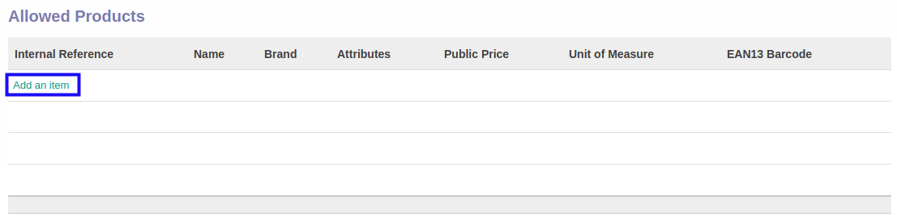
Pop-up Allowed Products akan muncul.
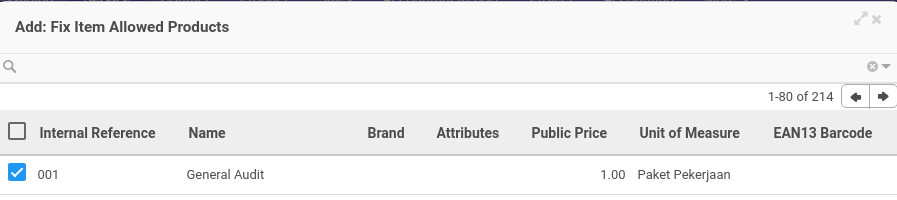 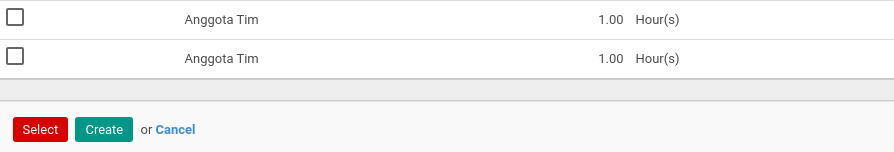
- Seleksi data produk.
- Klik tombol Select pada bagian bawah-kiri pop-up Allowed Products
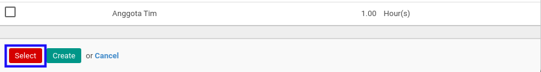
- Lanjutkan langkah ke-11 instruksi kerja Membuat Service Type atau langkah ke-12 instruksi kerja Memodifikasi Service Type.
C. OUTPUT
(Tidak ada instruksi khusus)
Menghapus Produk
(Instruksi kerja ini merupakan sub instruksi dari (1) Membuat Service Type, atau (2) Memodifikasi Service Type. Instruksi kerja ini tidak bisa berdiri sendiri)
A. INPUT
(Tidak ada instruksi khusus)
B. LANGKAH KERJA
- Klik icon tempat sampah pada bagian kanan Allowed Products yang akan dihapus.
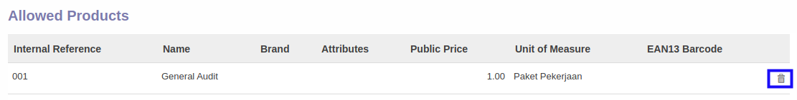
- Ulangi langkah ke-1 untuk setiap produk yang akan dihapus.
- Lanjutkan langkah ke-11 instruksi kerja Membuat Service Type atau langkah ke-12 instruksi kerja Memodifikasi Service Type.
C. OUTPUT
(Tidak ada instruksi khusus)
Menambahkan Produk Pada Team
(Instruksi kerja ini merupakan sub instruksi dari (1) Membuat Service Type, atau (2) Memodifikasi Service Type. Instruksi kerja ini tidak bisa berdiri sendiri)
A. INPUT
(Tidak ada instruksi khusus)
B. LANGKAH KERJA
- Klik label Add an Item pada bagian atas-kiri tabel Allowed Products
Pop-up Allowed Products akan muncul.
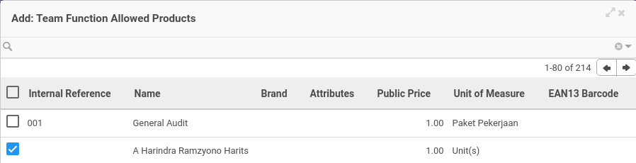

- Seleksi data produk.
- Klik tombol Select pada bagian bawah-kiri pop-up Allowed Products
- Lanjutkan langkah ke-14 instruksi kerja Membuat Service Type atau langkah ke-15 instruksi kerja Memodifikasi Service Type.
C. OUTPUT
(Tidak ada instruksi khusus)
Menghapus Produk Pada Team
(Instruksi kerja ini merupakan sub instruksi dari (1) Membuat Service Type, atau (2) Memodifikasi Service Type. Instruksi kerja ini tidak bisa berdiri sendiri)
A. INPUT
(Tidak ada instruksi khusus)
B. LANGKAH KERJA
- Klik icon tempat sampah pada bagian kanan Allowed Products yang akan dihapus.
- Ulangi langkah ke-1 untuk setiap produk yang akan dihapus.
- Lanjutkan langkah ke-14 instruksi kerja Membuat Service Type atau langkah ke-15 instruksi kerja Memodifikasi Service Type.
C. OUTPUT
(Tidak ada instruksi khusus)
Menambahkan Kategori Produk
(Instruksi kerja ini merupakan sub instruksi dari (1) Membuat Service Type, atau (2) Memodifikasi Service Type. Instruksi kerja ini tidak bisa berdiri sendiri)
A. INPUT
(Tidak ada instruksi khusus)
B. LANGKAH KERJA
- Klik label Add an Item pada bagian atas-kiri tabel Allowed Product Categories
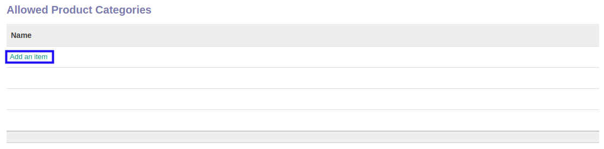
Pop-up Allowed Product Categories akan muncul.
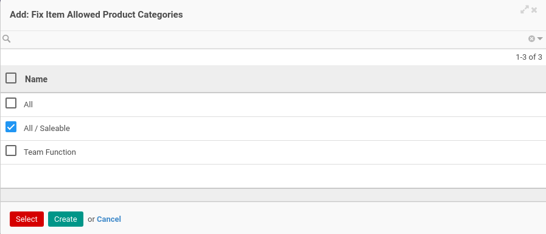
- Seleksi data kategori produk.
- Klik tombol Select pada bagian bawah-kiri pop-up Allowed Product Categories
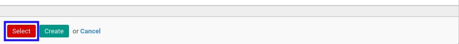
- Lanjutkan langkah ke-12 instruksi kerja Membuat Service Type atau langkah ke-13 instruksi kerja Memodifikasi Service Type.
C. OUTPUT
(Tidak ada instruksi khusus)
Menghapus Kategori Produk
(Instruksi kerja ini merupakan sub instruksi dari (1) Membuat Service Type, atau (2) Memodifikasi Service Type. Instruksi kerja ini tidak bisa berdiri sendiri)
A. INPUT
(Tidak ada instruksi khusus)
B. LANGKAH KERJA
- Klik icon tempat sampah pada bagian kanan Allowed Product Categories yang akan dihapus.

- Ulangi langkah ke-1 untuk setiap kategori produk yang akan dihapus.
- Lanjutkan langkah ke-12 instruksi kerja Membuat Service Type atau langkah ke-13 instruksi kerja Memodifikasi Service Type.
C. OUTPUT
(Tidak ada instruksi khusus)
Menambahkan Kategori Produk Pada Team
(Instruksi kerja ini merupakan sub instruksi dari (1) Membuat Service Type, atau (2) Memodifikasi Service Type. Instruksi kerja ini tidak bisa berdiri sendiri)
A. INPUT
(Tidak ada instruksi khusus)
B. LANGKAH KERJA
- Klik label Add an Item pada bagian atas-kiri tabel Allowed Product Categories
Pop-up Allowed Product Categories akan muncul.
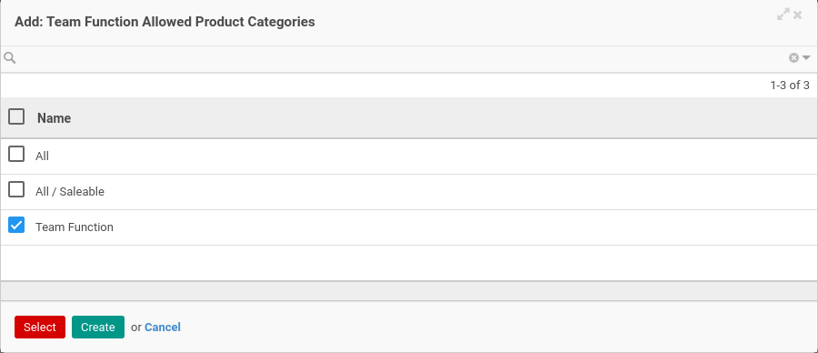
- Seleksi data kategori produk.
- Klik tombol Select pada bagian bawah-kiri pop-up Allowed Product Categories
- Lanjutkan langkah ke-15 instruksi kerja Membuat Service Type atau langkah ke-16 instruksi kerja Memodifikasi Service Type.
C. OUTPUT
(Tidak ada instruksi khusus)
Menghapus Kategori Produk Team
(Instruksi kerja ini merupakan sub instruksi dari (1) Membuat Service Type, atau (2) Memodifikasi Service Type. Instruksi kerja ini tidak bisa berdiri sendiri)
A. INPUT
(Tidak ada instruksi khusus)
B. LANGKAH KERJA
- Klik icon tempat sampah pada bagian kanan Allowed Product Categories yang akan dihapus.
- Ulangi langkah ke-1 untuk setiap kategori produk yang akan dihapus.
- Lanjutkan langkah ke-15 instruksi kerja Membuat Service Type atau langkah ke-16 instruksi kerja Memodifikasi Service Type.
C. OUTPUT
(Tidak ada instruksi khusus)
Menghapus Service Type
A. INPUT
- User yang akan menghapus harus memiliki akses untuk menghapus Service Type.
B. LANGKAH KERJA
- Buka menu Service -> Configuration -> Service Type. Abaikan jika sudah berada pada menu yang dimaksud.
- Buka data Service Type yang akan dihapus. Abaikan jika data sudah dibuka.
- Klik tombol More pada bagian atas-tengah form.
- Klik tombol Delete pada dropdown yang muncul ketika tombol More diklik.
- Klik tombol Ok pada pop-up konfirmasi penghapusan yang muncul.

C. OUTPUT
- Data Service Type akan terhapus.
Menonaktifkan Service Type
A. INPUT
- Data Service Type yang akan dinonaktifkan harus memiliki status Active
B. LANGKAH KERJA
- Buka menu Service -> Configuration -> Service Type. Abaikan jika sudah berada pada menu yang dimaksud.
- Buka data Service Type yang akan dinonaktifkan. Abaikan jika data sudah dibuka.
- Klik tombol Edit pada bagian atas-kiri form.
-
Deaktifkan Active.
-
Klik tombol Save pada bagian atas-kiri form.
C. OUTPUT
- Data Service Type akan non aktif.
Transaksi
Service Quotation
Service Quotation adalah fitur yang digunakan untuk pencatatan transaksi service quotation.
- Penjelasan Service Quotation
- Membuat Service Quotation
- Memodifikasi Service Quotation
- Menambahkan Termin Pembayaran Service Quotation
- Memodifikasi Termin Pembayaran Service Quotation
- Menghapus Termin Pembayaran Service Quotation
- Menambahkan Detail Termin Pembayaran Service Quotation
- Memodifikasi Detail Termin Pembayaran Service Quotation
- Menghapus Detail Termin Pembayaran Service Quotation
- Menghapus Service Quotation
- Mengkonfirmasi Service Quotation
- Menyetujui Service Quotation
- Menolak Service Quotation
- Memenangkan Service Quotation
- Mengalahkan Service Quotation
- Membatalkan Service Quotation
- Merestart Service Quotation
Penjelasan Service Quotation
Informasi pada Service Quotation dibagi menjadi beberapa bagian, yaitu:
HEADER

# Document
Nomor dokumen.
Title
Judul penawaran.
Default Operating Unit
Operating unit yang memiliki dokumen.
Partner
Nama calon klien/konsumen.
Type
Tipe service.
Responsible
Nama penanggung jawab jasa yang ditawarkan.
Currency
Mata uang yang digunakan.
Pricelist
Standar daftar harga yang digunakan.
Quotation Date
Tanggal quotation.
Start Date
Tanggal estimasi dimulainya jasa.
End Date
Tanggal estimasi diakhirinya jasa.
# Contract
Nomor kontrak. Informasi akan terisi otomatis ketika penawaran dimenangkan.
TAB FIX ITEMS
 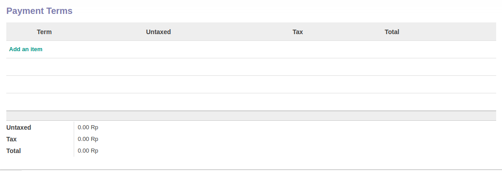
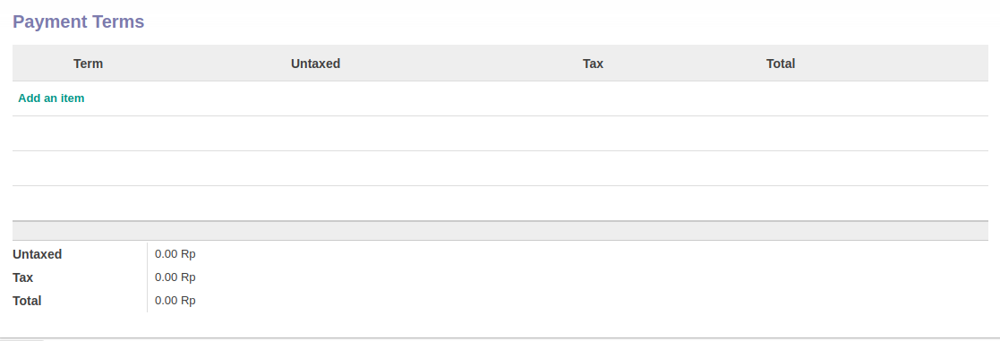
Pop Up Payment Term saat add an item diklik.

Items
Items jasa yang ditawarkan pada quotation.
Term
Deskripsi termin pembayaran.
Sequence
Urutan termin pembayaran.
Product
Nama produk.
Description
Deskripsi produk.
Price Unit
Harga per unit.
Qty
Jumlah unit.
UoM
Ukuran per unit (satuan).
Taxes
Pajak yang dikenakan untuk produk.
Untaxed
Perkalian dari Price Unit x Qty
Tax
Pajak yang dikenakan terhadap Untaxed
Total
Penambahan dari Untaxed + Tax
TAB CUSTOM INFORMATION

Custom Information Template
Template custom information yang digunakan.
TAB REVIEWS

Definition
Template multiple review yang digunakan
Review Partners Validations
Daftar nama user yang sedang ditunggu persetujuannya.
TAB POLICIES

Can Confirm
Apabila aktif user dapat mengkonfirmasi penawaran.
Can Restart Approval
Apabila aktif user dapat merestart persetujuan penawaran.
Can Mark As Won
Apabila aktif user dapat memenangkan penawaran.
Can Mark As Lost
Apabila aktif user dapat mengalahkan penawaran.
Can Cancel
Apabila aktif user dapat membatalkan penawaran.
Can Restart
Apabila aktif user dapat merestart penawaran.
TAB LOGS

Confirmation
Waktu konfirmasi dan user yang mengkonfirmasi penawaran.
Won
Waktu menang dan user yang memenangkan penawaran.
Lost
Waktu kalah dan user yang mengalahkan penawaran.
Cancellation
Waktu batal dan user yang membatalkan penawaran
TAB NOTES
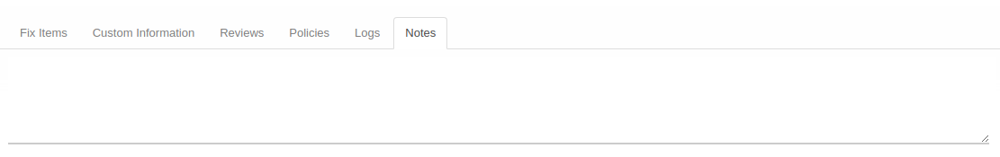
Notes
Catatan.
Membuat Service Quotation
A. INPUT
(Tidak ada instruksi khusus)
B. LANGKAH KERJA
- Buka menu Service -> Service -> Quotation. Abaikan jika sudah berada pada menu yang dimaksud.
- Klik tombol Create pada bagian atas-kiri form.
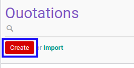
- Ubah # Document dengan penomeran yang dikehendaki. Biarkan berisi / apabila menghendaki penomeran otomatis.
- Isi Title. Wajib diisi.
- Pilih Default Operating Unit. Tidak wajib diisi.
- Pilih Partner. Wajib diisi.
- Pilih Type. Wajib diisi.
- Pilih Responsible. Wajib diisi.
- Pilih Currency. Wajib diisi.
- Pilih Pricelist. Wajib diisi.
- Pilih Quotation Date. Wajib diisi.
- Pilih Start Date. Tidak wajib diisi.
- Pilih End Date. Tidak wajib diisi.
- Beralih ke tab Fix Items.
- Tambah/Modifikasi/Hapus Payment Terms. Ulangi langkah ini sampai Payment Terms sesuai dengan keinginan.
- Klik tombol Save pada bagian atas-kiri form.

C. OUTPUT
- Data Service Quotation akan terbuat dengan status Draft
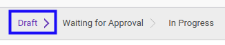
Memodifikasi Service Quotation
A. INPUT
- Data Service Quotation yang dapat dimodifikasi harus memiliki status Draft.
- User yang akan memodifikasi harus memiliki akses untuk memodifikasi Service Quotation.
B. LANGKAH KERJA
- Buka menu Service -> Service -> Quotation. Abaikan jika sudah berada pada menu yang dimaksud.
- Buka data Service Quotation yang akan dimodifikasi. Abaikan jika data sudah dibuka.
- Klik tombol Edit pada bagian atas-kiri form.

- Ubah # Document jika dibutuhkan. Wajib diisi.
- Isi dan sesuaikan Title jika dibutuhkan. Wajib diisi.
- Pilih dan sesuaikan Default Operating Unit jika dibutuhkan. Tidak wajib diisi.
- Pilih dan sesuaikan Partner jika dibutuhkan. Wajib diisi.
- Pilih dan sesuaikan Type jika dibutuhkan. Wajib diisi.
- Pilih dan sesuaikan Responsible jika dibutuhkan. Wajib diisi.
- Pilih dan sesuaikan Currency jika dibutuhkan. Wajib diisi.
- Pilih dan sesuaikan Pricelist jika dibutuhkan. Wajib diisi.
- Pilih dan sesuaikan Quotation Date jika dibutuhkan. Wajib diisi.
- Pilih dan sesuaikan Start Date jika dibutuhkan. Tidak wajib diisi.
- Pilih dan sesuaikan End Date jika dibutuhkan. Tidak wajib diisi.
- Beralih ke tab Fix Items.
- Tambah/Modifikasi/Hapus Payment Terms. Ulangi langkah ini sampai Payment Terms sesuai dengan keinginan.
- Klik tombol Save pada bagian atas-kiri form.
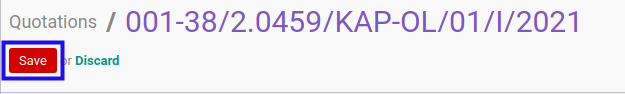
C. OUTPUT
- Data Service Quotation akan berubah sesuai dengan perubahan yang dilakukan.
Menambahkan Termin Pembayaran
(Instruksi kerja ini merupakan sub instruksi dari (1) Membuat Service Quotation, atau (2) Memodifikasi Service Quotation. Instruksi kerja ini tidak bisa berdiri sendiri)
A. INPUT
(Tidak ada instruksi khusus)
B. LANGKAH KERJA
- Klik label Add an Item pada bagian atas-kiri tabel Payment Terms
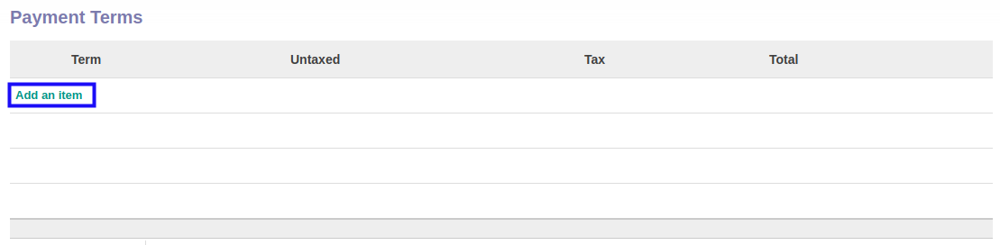
Pop-up Payment Terms akan muncul.
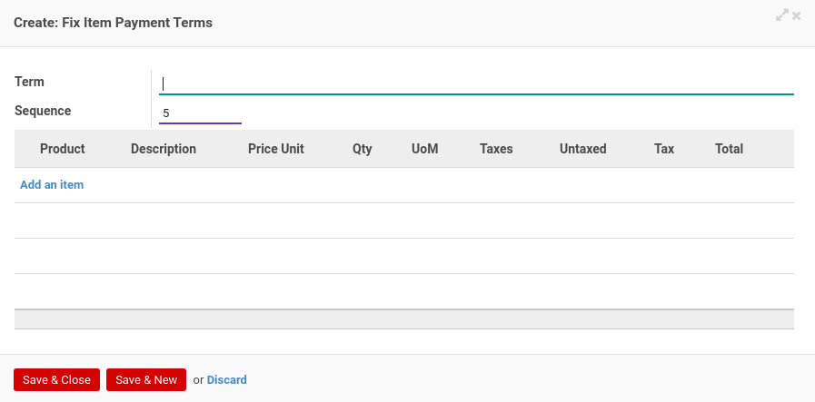
- Isi Term. Wajib diisi.
- Isi Sequence. Wajib diisi.
- Tambah/Modifikasi/Hapus Product. Ulangi langkah ini sampai Product sesuai dengan keinginan.
- Klik tombol Save & Close pada bagian bawah-kiri pop-up Payment Terms untuk menyimpan data. Klik tombol Save & New pada bagian bawah-kiri pop-up Payment Terms untuk menyimpan data dan menambahkan data baru.

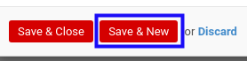
- Ulangi langkah ke-5 jika pada langkah ke-6 tombol Save & New yang dipilih.
- Lanjutkan langkah ke-15 instruksi kerja Membuat Service Quotation atau langkah ke-16 instruksi kerja Memodifikasi Service Quotation.
C. OUTPUT
(Tidak ada instruksi khusus)
Memodifikasi Termin Pembayaran
(Instruksi kerja ini merupakan sub instruksi dari (1) Membuat Service Quotation, atau (2) Memodifikasi Service Quotation. Instruksi kerja ini tidak bisa berdiri sendiri)
A. INPUT
(Tidak ada instruksi khusus)
B. LANGKAH KERJA
- Buka data Payment Terms yang akan dimodifikasi.
- Isi dan sesuaikan Term jika dibutuhkan. Wajib diisi.
- Isi dan sesuaikan Sequence jika dibutuhkan. Wajib diisi.
- Tambah/Modifikasi/Hapus Product. Ulangi langkah ini sampai Product sesuai dengan keinginan.
- Klik tombol Save pada bagian bawah-kiri form.
- Lanjutkan langkah ke-15 instruksi kerja Membuat Service Quotation atau langkah ke-16 instruksi kerja Memodifikasi Service Quotation.
C. OUTPUT
(Tidak ada instruksi khusus)
Menghapus Termin Pembayaran
(Instruksi kerja ini merupakan sub instruksi dari (1) Membuat Service Quotation, atau (2) Memodifikasi Service Quotation. Instruksi kerja ini tidak bisa berdiri sendiri)
A. INPUT
(Tidak ada instruksi khusus)
B. LANGKAH KERJA
- Klik icon tempat sampah pada bagian kanan data Payment Terms yang akan dihapus.
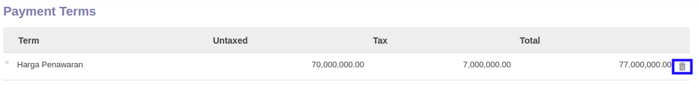
- Lanjutkan langkah ke-15 instruksi kerja Membuat Service Quotation atau langkah ke-16 instruksi kerja Memodifikasi Service Quotation.
C. OUTPUT
(Tidak ada instruksi khusus)
Menambahkan Detail Termin Pembayaran
(Instruksi kerja ini merupakan sub instruksi dari (1) Menambahkan Termin Pembayaran, atau (2) Memodifikasi Termin Pembayaran. Instruksi kerja ini tidak bisa berdiri sendiri)
A. INPUT
(Tidak ada instruksi khusus)
B. LANGKAH KERJA
- Klik label Add an Item pada bagian atas-kiri tabel Fix Item Payment Terms

- Pilih Product. Wajib diisi.
- Isi Description. Wajib diisi.
- Isi Price Unit. Wajib diisi.
- Isi Qty. Wajib diisi.
- Pilih UoM. Wajib diisi.
- Pilih Taxes. Wajib diisi.
- Klik tombol Save & Close pada bagian bawah-kiri pop-up Payment Terms untuk menyimpan data. Klik tombol Save & New pada bagian bawah-kiri pop-up Payment Terms untuk menyimpan data dan menambahkan data baru.
- Ulangi mulai langkah ke-1 jika pada langkah ke-8 tombol Save & New yang dipilih.
- Lanjutkan langkah ke-5 instruksi kerja Menambahkan Termin Pembayaran atau langkah ke-4 instruksi kerja Memodifikasi Termin Pembayaran.
C. OUTPUT
(Tidak ada instruksi khusus)
Memodifikasi Detail Termin Pembayaran
(Instruksi kerja ini merupakan sub instruksi dari (1) Menambahkan Termin Pembayaran, atau (2) Memodifikasi Termin Pembayaran. Instruksi kerja ini tidak bisa berdiri sendiri)
A. INPUT
(Tidak ada instruksi khusus)
B. LANGKAH KERJA
- Pilih dan sesuaikan Product jika dibutuhkan. Wajib diisi.
- Isi dan sesuaikan Description jika dibutuhkan. Wajib diisi.
- Isi dan sesuaikan Price Unit jika dibutuhkan. Wajib diisi.
- Isi dan sesuaikan Qty jika dibutuhkan. Wajib diisi.
- Pilih dan sesuaikan UoM jika dibutuhkan. Wajib diisi.
- Pilih dan sesuaikan Taxes jika dibutuhkan. Wajib diisi.
- Klik tombol Save & Close pada bagian bawah-kiri pop-up Payment Terms untuk menyimpan data. Klik tombol Save & New pada bagian bawah-kiri pop-up Payment Terms untuk menyimpan data dan menambahkan data baru.
- Ulangi mulai langkah ke-1 jika pada langkah ke-7 tombol Save & New yang dipilih.
- Lanjutkan langkah ke-5 instruksi kerja Menambahkan Termin Pembayaran atau langkah ke-4 instruksi kerja Memodifikasi Termin Pembayaran.
C. OUTPUT
(Tidak ada instruksi khusus)
Menghapus Detail Termin Pembayaran
(Instruksi kerja ini merupakan sub instruksi dari (1) Menambahkan Termin Pembayaran, atau (2) Memodifikasi Termin Pembayaran. Instruksi kerja ini tidak bisa berdiri sendiri)
A. INPUT
(Tidak ada instruksi khusus)
B. LANGKAH KERJA
- Klik icon tempat sampah pada bagian kanan data Product yang akan dihapus.
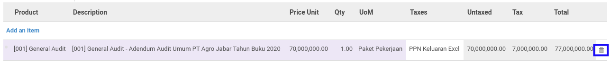
- Lanjutkan langkah ke-5 instruksi kerja Menambahkan Termin Pembayaran atau langkah ke-4 instruksi kerja Memodifikasi Termin Pembayaran.
C. OUTPUT
(Tidak ada instruksi khusus)
Menghapus Service Quotation
A. INPUT
- Data Service Quotation yang dapat dihapus harus memiliki status Draft.
- User yang akan menghapus harus memiliki akses untuk menghapus Service Quotation.
B. LANGKAH KERJA
- Buka menu Service -> Service -> Quotation. Abaikan jika sudah berada pada menu yang dimaksud.
- Buka data Service Quotation yang akan dihapus. Abaikan jika data sudah dibuka.
- Klik tombol More pada bagian atas-tengah form.

- Klik tombol Delete pada dropdown yang muncul ketika tombol More diklik.

- Klik tombol Ok pada pop-up konfirmasi penghapusan yang muncul.

C. OUTPUT
- Data Service Quotation akan terhapus.
Mengkonfirmasi Service Quotation
A. INPUT
- Data Service Quotation yang dapat dikonfirmasi harus memiliki status Draft.
- User yang akan mengkonfirmasi harus memiliki akses untuk mengkonfirmasi Service Quotation.
B. LANGKAH KERJA
- Buka menu Service -> Service -> Quotation. Abaikan jika sudah berada pada menu yang dimaksud.
- Buka data Service Quotation yang akan dikonfirmasi. Abaikan jika data sudah dibuka.
- Klik tombol Confirm pada bagian atas-kiri form.
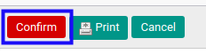
- Klik tombol Ok pada pop-up konfirmasi confirm yang muncul.
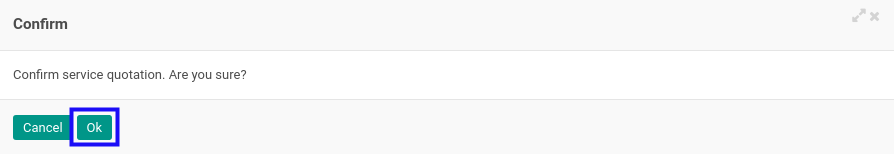
C. OUTPUT
- Status dari Service Quotation akan berubah menjadi Waiting for Approval.

- Isian Service Quotation sudah tidak bisa diubah.
Menyetujui Service Quotation
- Data Service Quotation yang akan disetujui harus memiliki status Waiting for Approval.
- User yang akan menyetujui harus memiliki akses untuk menyetujui Service Quotation.
B. LANGKAH KERJA
- Buka menu Service -> Service -> Quotation. Abaikan jika sudah berada pada menu yang dimaksud.
- Buka data Service Quotation yang akan disetujui. Abaikan jika data sudah dibuka.
- Klik tombol Validate pada bagian atas-kiri form.

C. OUTPUT
- Status dari Service Quotation akan berubah menjadi In Progress.
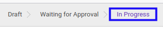
Menolak Service Quotation
A. INPUT
- Data Service Quotation yang akan ditolak harus memiliki status Waiting for Approval.
- User yang akan menolak harus memiliki akses untuk menolak Service Quotation.
B. LANGKAH KERJA
- Buka menu Service -> Service -> Quotation. Abaikan jika sudah berada pada menu yang dimaksud.
- Buka data Service Quotation yang akan ditolak. Abaikan jika data sudah dibuka.
- Klik tombol Reject pada bagian atas-kiri form.
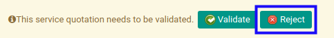
C. OUTPUT
- Data Service Quotation telah ditolak.

Memenangkan Service Quotation
A. INPUT
- Data Service Quotation yang dapat dimenangkan harus memiliki status In Progress.
- User yang akan memenangkan harus memiliki akses untuk memenangkan Service Quotation.
B. LANGKAH KERJA
- Buka menu Service -> Service -> Quotation. Abaikan jika sudah berada pada menu yang dimaksud.
- Buka data Service Quotation yang akan dimenangkan. Abaikan jika data sudah dibuka.
- Klik tombol Mark As Won pada bagian atas-kiri form.
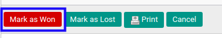
- Klik tombol Ok pada pop-up konfirmasi pemenangan yang muncul.
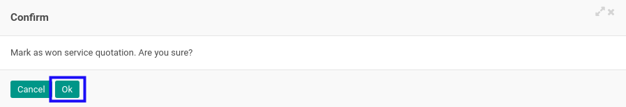
C. OUTPUT
- Data Service Quotation akan berubah menjadi status Won.

Mengalahkan Service Quotation
A. INPUT
- Data Service Quotation yang dapat dikalahkan harus memiliki status In Progress.
- User yang akan mengalahkan harus memiliki akses untuk mengalahkan Service Quotation.
B. LANGKAH KERJA
- Buka menu Service -> Service -> Quotation. Abaikan jika sudah berada pada menu yang dimaksud.
- Buka data Service Quotation yang akan dikalahkan. Abaikan jika data sudah dibuka.
- Klik tombol Mark As Lost pada bagian atas-kiri form.
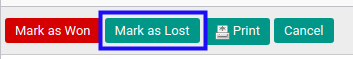
- Klik tombol Ok pada pop-up konfirmasi pengalahan yang muncul.

C. OUTPUT
- Data Service Quotation akan berubah menjadi status Lost.
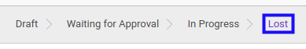
Membatalkan Service Quotation
A. INPUT
- Data Service Quotation yang akan dibatalkan harus memiliki status selain Cancelled.
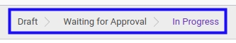
- User yang akan membatalkan harus memiliki akses untuk membatalkan Service Quotation.
B. LANGKAH KERJA
- Buka menu Service -> Service -> Quotation. Abaikan jika sudah berada pada menu yang dimaksud.
- Buka data Service Quotation yang akan dibatalkan. Abaikan jika data sudah dibuka.
- Klik tombol Cancel pada bagian atas-kiri form.
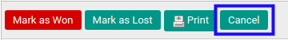
- Klik tombol Ok pada pop-up konfirmasi pembatalan yang muncul.

- Pilih Reason pada pop-up Cancellation Reason yang muncul.

- Klik tombol Confirm pada pop-up Cancellation Reason.

- Klik tombol Ok pada pop-up konfirmasi pembatalan yang muncul.

C. OUTPUT
- Status dari Service Quotation akan berubah menjadi Cancelled

Merestart Service Quotation
A. INPUT
- Data Service Quotation yang akan direstart harus memiliki status Cancelled.
- User yang akan merestart harus memiliki akses untuk merestart Service Quotation.
B. LANGKAH KERJA
- Buka menu Service -> Service -> Quotation. Abaikan jika sudah berada pada menu yang dimaksud.
- Buka data Service Quotation yang akan direstart. Abaikan jika data sudah dibuka.
- Klik tombol Restart pada bagian atas-kiri form.
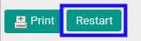
- Klik tombol Ok pada pop-up konfirmasi restart yang muncul.

C. OUTPUT
- Status dari Service Quotation akan berubah menjadi Draft.
- Service Quotation dapat kembali dimodifikasi.
Service Contract
Service Contract adalah fitur yang digunakan untuk pencatatan transaksi service contract.
- Penjelasan Service Contract
- Membuat Service Contract
- Memodifikasi Service Contract
- Menambahkan Termin Pembayaran
- Memodifikasi Termin Pembayaran
- Menghapus Termin Pembayaran
- Menambahkan Detail Termin Pembayaran
- Memodifikasi Detail Termin Pembayaran
- Menghapus Detail Termin Pembayaran
- Menambahkan Team
- Memodifikasi Team
- Menghapus Team
- Meghapus Service Contract
- Mengkonfirmasi Service Contract
- Menyetujui Service Contract
- Menolak Service Contract
- Memulai Service Contract
- Membuat Customer Invoice Dari Payment Term
- Membatalkan Customer Invoice Dari Payment Term
- Menyelesaikan Service Contract
- Memutuskan Service Contract
- Membatalkan Service Contract
- Merestart Service Contract
Penjelasan Service Contract
Informasi pada Service Contract dibagi menjadi beberapa bagian, yaitu:
- Header
- Tab Fix Items
- Tab Teams
- Tab Custom Information
- Tab Analytic & Project
- Tab Reviews
- Tab Policies
- Tab Logs
- Tab Notes
HEADER

# Document
Nomor dokumen.
Title
Judul kontrak.
Default Operating Unit
Operating unit yang memiliki dokumen.
# Quotation
Nomor penawaran. Informasi akan terisi otomatis.
Partner
Nama calon klien/konsumen.
Type
Tipe service.
Salesman
Nama tenaga penjualan.
Responsible
Nama penanggung jawab jasa yang ditawarkan.
Currency
Mata uang yang digunakan.
Pricelist
Standar daftar harga yang digunakan.
Contract Date
Tanggal kontrak.
Start Date
Tanggal estimasi dimulainya jasa.
End Date
Tanggal estimasi diakhirinya jasa.
TAB FIX ITEMS
 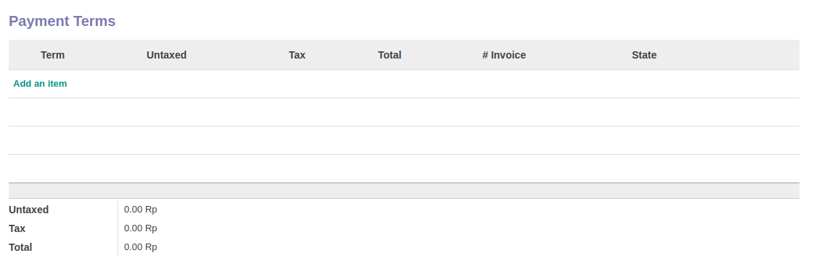
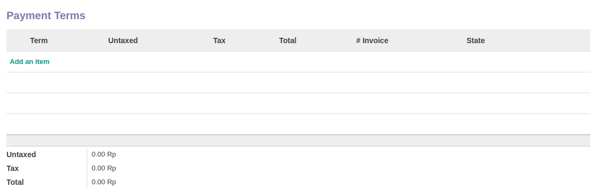
Pop Up Payment Term saat add an item diklik.

Receivable Journal
Pengaturan accounting receivable journal.
Receivable Account
Pengaturan accounting receivable account.
Items
Items jasa yang ditawarkan pada kontrak.
Term
Deskripsi termin pembayaran.
Sequence
Urutan termin pembayaran.
Product
Nama produk.
Description
Deskripsi produk.
Price Unit
Harga per unit.
Qty
Jumlah unit.
UoM
Ukuran per unit (satuan).
Taxes
Pajak yang dikenakan untuk produk.
Untaxed
Perkalian dari Price Unit x Qty
Tax
Pajak yang dikenakan terhadap Untaxed.
Total
Penambahan dari Untaxed + Tax.
Invoice Line
Referensi Invoice.
TAB TEAMS

Function
Nama Fungsi.
Team
Nama Team.
TAB CUSTOM INFORMATION

Custom Information Template
Template custom information yang digunakan.
TAB ANALYTIC & PROJECT

Parent Analytic Account
Akun analitik induk yang digunakan.
Analytic Account
Akun analitik yang digunakan.
Auto Create Project
Penanda pembuatan proyek secara otomatis diaktifkan.
Project
Nama proyek yang digunakan.
TAB REVIEWS

Definition
Template multiple review yang digunakan.
Review Partners Validations
Daftar nama user yang sedang ditunggu persetujuannya.
TAB POLICIES

Can Confirm
Apabila aktif user dapat mengkonfirmasi kontrak.
Can Restart Approval
Apabila aktif user dapat merestart persetujuan kontrak.
Can Force Start
Apabila aktif user dapat memaksa untuk memulai kontrak.
Can Force Finish
Apabila aktif user dapat memaksa untuk menyelesaikan kontrak.
Can Cancel
Apabila aktif user dapat membatalkan kontrak.
Can Terminate
Apabila aktif user dapat mengakhiri kontrak.
Can Restart
Apabila aktif user dapat merestart kontrak.
TAB LOGS

Confirmation
Waktu konfirmasi dan user yang mengkonfirmasi kontrak.
Start
Waktu mulai dan user yang memulai kontrak.
Finish
Waktu selesai dan user yang menyelesaikan kontrak.
Cancellation
Waktu batal dan user yang membatalkan kontrak.
Termination
Waktu akhir dan user yang mengakhiri kontrak.
TAB NOTES

Notes
Catatan.
Membuat Service Contract
A. INPUT
(Tidak ada instruksi khusus)
B. LANGKAH KERJA
- Buka menu Service -> Service -> Contract. Abaikan jika sudah berada pada menu yang dimaksud.
- Klik tombol Create pada bagian atas-kiri form.
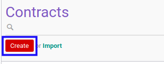
- Ubah # Document dengan penomeran yang dikehendaki. Biarkan berisi / apabila menghendaki penomeran otomatis.
- Isi Title. Wajib diisi.
- Pilih Default Operating Unit. Tidak wajib diisi.
- Pilih Partner. Wajib diisi.
- Pilih Type. Wajib diisi.
- Pilih Salesman. Wajib diisi.
- Pilih Responsible. Wajib diisi.
- Pilih Currency. Wajib diisi.
- Pilih Pricelist. Wajib diisi.
- Pilih Contract Date. Wajib diisi.
- Pilih Start Date. Tidak wajib diisi.
- Pilih End Date. Tidak wajib diisi.
- Beralih ke tab Fix Items.
- Pilih Receivable Journal. Tidak wajib diisi.
- Pilih Receivable Account. Tidak wajib diisi.
- Tambah/Modifikasi/Hapus Payment Terms. Ulangi langkah ini sampai Payment Terms sesuai dengan keinginan.
- Beralih ke tab Teams.
- Tambah/Modifikasi/Hapus Team. Ulangi langkah ini sampai Team sesuai dengan keinginan.
- Beralih ke tab Analytic & Project.
- Pilih Parent Analytic Account. Tidak wajib diisi.
- Pilih Analytic Account. Tidak wajib diisi.
- Aktifkan/ Deaktifkan Auto Create Project. Tidak wajib diisi.
- Pilih Project. Tidak wajib diisi.
- Klik tombol Save pada bagian atas-kiri form.
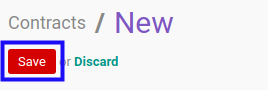
C. OUTPUT
- Data Service Contract akan terbuat dengan status Draft

Memodifikasi Service Contract
A. INPUT
- Data Service Contract yang dapat dimodifikasi harus memiliki status Draft.
- User yang akan memodifikasi harus memiliki akses untuk memodifikasi Service Contract.
B. LANGKAH KERJA
- Buka menu Service -> Service -> Contract. Abaikan jika sudah berada pada menu yang dimaksud.
- Buka data Service Contract yang akan dimodifikasi. Abaikan jika data sudah dibuka.
- Klik tombol Edit pada bagian atas-kiri form.

- Ubah # Document jika dibutuhkan. Wajib diisi.
- Isi dan sesuaikan Title jika dibutuhkan. Wajib diisi.
- Pilih dan sesuaikan Default Operating Unit jika dibutuhkan. Tidak wajib diisi.
- Pilih dan sesuaikan Partner jika dibutuhkan. Wajib diisi.
- Pilih dan sesuaikan Type jika dibutuhkan. Wajib diisi.
- Pilih dan sesuaikan Salesman jika dibutuhkan. Wajib diisi.
- Pilih dan sesuaikan Responsible jika dibutuhkan. Wajib diisi.
- Pilih dan sesuaikan Currency jika dibutuhkan. Wajib diisi.
- Pilih dan sesuaikan Pricelist jika dibutuhkan. Wajib diisi.
- Pilih dan sesuaikan Contract Date jika dibutuhkan. Wajib diisi.
- Pilih dan sesuaikan Start Date jika dibutuhkan. Tidak wajib diisi.
- Pilih dan sesuaikan End Date jika dibutuhkan. Tidak wajib diisi.
- Beralih ke tab Fix Items.
- Pilih dan sesuaikan Receivable Journal jika dibutuhkan. Tidak wajib diisi.
- Pilih dan sesuaikan Receivable Account jika dibutuhkan. Tidak wajib diisi.
- Tambah/Modifikasi/Hapus Payment Terms. Ulangi langkah ini sampai Payment Terms sesuai dengan keinginan.
- Beralih ke tab Teams.
- Tambah/Modifikasi/Hapus Team. Ulangi langkah ini sampai Team sesuai dengan keinginan.
- Beralih ke tab Analytic & Project.
- Pilih dan sesuaikan Parent Analytic Account jika dibutuhkan. Tidak wajib diisi.
- Pilih dan sesuaikan Analytic Account jika dibutuhkan. Tidak wajib diisi.
- Aktifkan/ Deaktifkan Auto Create Project jika dibutuhkan. Tidak wajib diisi.
- Pilih dan sesuaikan Project jika dibutuhkan. Tidak wajib diisi.
- Klik tombol Save pada bagian atas-kiri form.
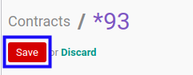
C. OUTPUT
- Data Service Contract akan berubah sesuai dengan perubahan yang dilakukan.
Menambahkan Termin Pembayaran
Memodifikasi Termin Pembayaran
Menghapus Termin Pembayaran
Menambahkan Detail Termin Pembayaran
Memodifikasi Detail Termin Pembayaran
Menghapus Detail Termin Pembayaran
Menambahkan Team
Memodifikasi Team
Menghapus Team
Menghapus Service Contract
A. INPUT
- Data Service Contract yang dapat dihapus harus memiliki status Draft.
- User yang akan menghapus harus memiliki akses untuk menghapus Service Contract.
B. LANGKAH KERJA
- Buka menu Service -> Service -> Contract. Abaikan jika sudah berada pada menu yang dimaksud.
- Buka data Service Contract yang akan dihapus. Abaikan jika data sudah dibuka.
- Klik tombol More pada bagian atas-tengah form.
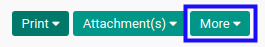
- Klik tombol Delete pada dropdown yang muncul ketika tombol More diklik.

- Klik tombol Ok pada pop-up konfirmasi penghapusan yang muncul.

C. OUTPUT
- Data Service Contract akan terhapus.
Mengkonfirmasi Service Contract
A. INPUT
- Data Service Contract yang dapat dikonfirmasi harus memiliki status Draft.
- User yang akan mengkonfirmasi harus memiliki akses untuk mengkonfirmasi Service Contract.
B. LANGKAH KERJA
- Buka menu Service -> Service -> Contract. Abaikan jika sudah berada pada menu yang dimaksud.
- Buka data Service Contract yang akan dikonfirmasi. Abaikan jika data sudah dibuka.
- Klik tombol Confirm pada bagian atas-kiri form.
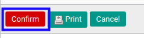
- Klik tombol Ok pada pop-up konfirmasi confirm yang muncul.

C. OUTPUT
- Status dari Service Contract akan berubah menjadi Waiting for Approval.

- Isian Service Contract sudah tidak bisa diubah.
Menyetujui Service Contract
- Data Service Contract yang akan disetujui harus memiliki status Waiting for Approval.
- User yang akan menyetujui harus memiliki akses untuk menyetujui Service Contract.
B. LANGKAH KERJA
- Buka menu Service -> Service -> Contract. Abaikan jika sudah berada pada menu yang dimaksud.
- Buka data Service Contract yang akan disetujui. Abaikan jika data sudah dibuka.
- Klik tombol Validate pada bagian atas-kiri form.

C. OUTPUT
- Status dari Service Contract akan berubah menjadi Ready to Start.
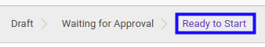
Menolak Service Contract
A. INPUT
- Data Service Contract yang akan ditolak harus memiliki status Waiting for Approval.
- User yang akan menolak harus memiliki akses untuk menolak Service Contract.
B. LANGKAH KERJA
- Buka menu Service -> Service -> Contract. Abaikan jika sudah berada pada menu yang dimaksud.
- Buka data Service Contract yang akan ditolak. Abaikan jika data sudah dibuka.
- Klik tombol Reject pada bagian atas-kiri form.

C. OUTPUT
- Data Service Contract telah ditolak.
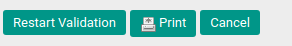
Memulai Service Contract
Membuat Customer Invoice Dari Payment Term
Membatalkan Customer Invoice Dari Payment Term
Menyelesaikan Service Contract
Memutuskan Service Contract
Membatalkan Service Contract
A. INPUT
- Data Service Contract yang akan dibatalkan harus memiliki status selain Cancelled.
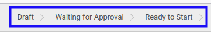
- User yang akan membatalkan harus memiliki akses untuk membatalkan Service Contract.
B. LANGKAH KERJA
- Buka menu Service -> Service -> Contract. Abaikan jika sudah berada pada menu yang dimaksud.
- Buka data Service Contract yang akan dibatalkan. Abaikan jika data sudah dibuka.
- Klik tombol Cancel pada bagian atas-kiri form.

- Klik tombol Ok pada pop-up konfirmasi pembatalan yang muncul.
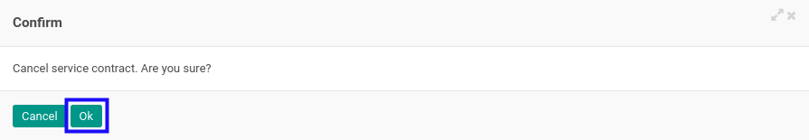
- Pilih Reason pada pop-up Cancellation Reason yang muncul.
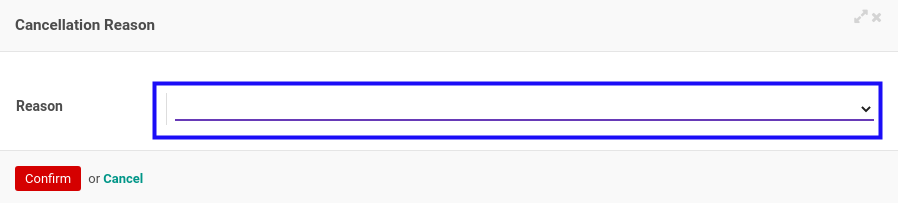
- Klik tombol Confirm pada pop-up Cancellation Reason.
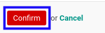
- Klik tombol Ok pada pop-up konfirmasi pembatalan yang muncul.

C. OUTPUT
- Status dari Service Contract akan berubah menjadi Cancelled

Merestart Service Contract
A. INPUT
- Data Service Contract yang akan direstart harus memiliki status Cancelled.
- User yang akan merestart harus memiliki akses untuk merestart Service Contract.
B. LANGKAH KERJA
- Buka menu Service -> Service -> Contract. Abaikan jika sudah berada pada menu yang dimaksud.
- Buka data Service Contract yang akan direstart. Abaikan jika data sudah dibuka.
- Klik tombol Restart pada bagian atas-kiri form.

- Klik tombol Ok pada pop-up konfirmasi restart yang muncul.
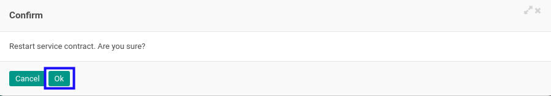
C. OUTPUT
- Status dari Service Contract akan berubah menjadi Draft.
- Service Contract dapat kembali dimodifikasi.